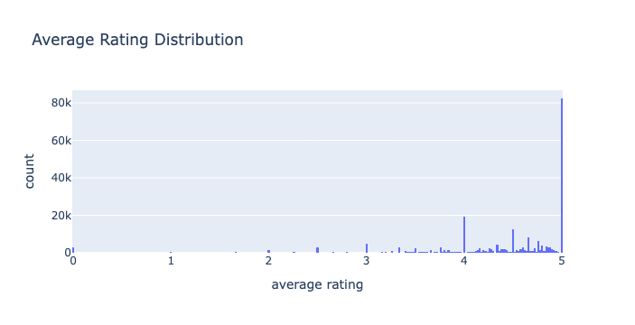
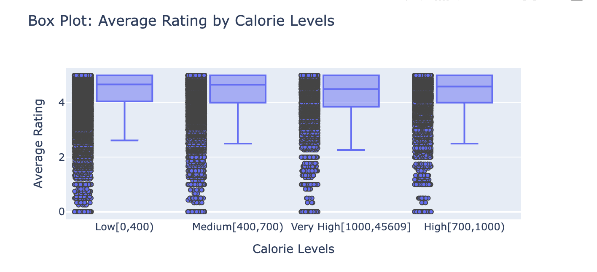
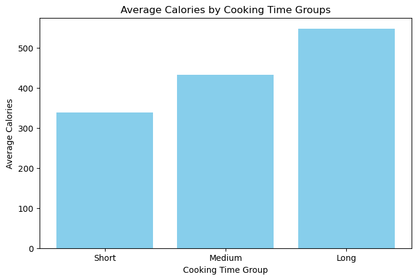
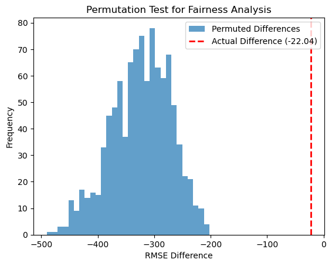

Author：Yajing Fang
This data science project was conducted by the University of California, San Diego (UCSD) to explore the relationship between recipe ratings and their calorie ratio.
My dataset comes from Food.com , which contains recipes and user ratings. This dataset records various types of recipes and their corresponding ratings and calorie information. At the heart of my project was the question: What is the relationship between a recipe's rating and its calorie content? I wanted to explore modern eating habits and see if people tend to give high marks to low-calorie recipes or whether high-calorie recipes are more popular.
The first dataset recipe contains 83782 rows representing 83782 unique recipes, with 10 columns recording the following information:
| Column | Description |
|---|---|
| 'name' | Recipe name |
| 'id' | Recipe ID |
| 'minutes' | Minutes to prepare recipe |
| 'contributor_id' | User ID who submitted this recipe |
| 'submitted' | Date recipe was submitted |
| 'tags' | Food.com tags for recipe |
| 'nutrition' | Nutrition information in the form [calories (#), total fat (PDV), sugar (PDV), sodium (PDV), protein (PDV), saturated fat (PDV), carbohydrates (PDV)]; PDV stands for "percentage of daily value" |
| 'n_steps' | Number of steps in recipe |
| 'steps' | Text for recipe steps, in order |
| 'description' | User-provided description |
| 'ingredients' | Text for recipe ingredients |
| 'n_ingredients' | Number of ingredients in recipe |
The second dataset, interactions, contains 731927 rows and each row contains a review from the user on a specific recipe. The columns it includes are:
| Column | Description |
|---|---|
'user_id'
|
User ID |
'recipe_id'
|
Recipe ID |
'date'
|
Date of interaction |
'rating'
|
Rating given |
'review'
|
Review text |
This question is especially important in these days of health and eating habits. By analyzing this relationship, we can better understand current food preferences and help the restaurant industry, health advocates, and everyday users fine-tune diet recommendations and choices.
In order to improve the efficiency and convenience of data analysis, we have carried out the following data cleansing steps:
| Column | Description |
|---|---|
| 'name' | object |
| 'id' | int64 |
| 'minutes' | int64 |
| 'contributor_id' | int64r |
| 'submitted' | DateTime |
| 'tags' | object |
| 'n_steps' | int64r |
| 'steps' | object |
| 'description' | object |
| 'ingredients' | object |
| 'n_ingredients' | int64 |
| 'user_id' | float64 |
| 'recipe_id' | int64 |
| 'date' | DateTime |
| 'rating' | float64 |
| 'review' | object |
| 'average rating' | float64 |
| 'calories' | float64 |
| 'total_fat' | float64 |
| 'sugar' | float64 |
| 'sodium' | float64 |
| 'protein' | float64 |
| 'saturated_fat' | float64 |
| 'carbohydrates' | float64 |
| 'calorie_bins' | object |
| 'rating_missing' | bool |
| 'cooking_duration_long' | bool |
| 'cooking_duration_medium' | bool |
| 'cooking_duration_short' | bool |
| 'cooking_duration' | object |
| 'cooking_duration_encoded' | int64 |
| name | id | minutes | contributor_id | submitted | tags | n_steps | steps | description | ingredients | protein | saturated_fat | carbohydrates | calorie_bins | rating_missing | cooking_duration_long | cooking_duration_medium | cooking_duration_short | cooking_duration | cooking_duration_encoded |
|---|---|---|---|---|---|---|---|---|---|---|---|---|---|---|---|---|---|---|---|
| impossible macaroni and cheese pie | 275022 | 50 | 531768 | 2008-01-01 | ['60-minutes-or-less', 'time-to-make', 'course...'] | 11 | ['heat oven to 400 degrees fahrenheit', 'greas...'] | one of my mom's favorite bisquick recipes... | ['cheddar cheese', 'macaroni', 'milk', 'eggs',...] | 41.0 | 62.0 | 8.0 | Low[0,400) | False | False | True | False | medium | 1 |
| impossible macaroni and cheese pie | 275022 | 50 | 531768 | 2008-01-01 | ['60-minutes-or-less', 'time-to-make', 'course...'] | 11 | ['heat oven to 400 degrees fahrenheit', 'greas...'] | one of my mom's favorite bisquick recipes... | ['cheddar cheese', 'macaroni', 'milk', 'eggs',...] | 41.0 | 62.0 | 8.0 | Low[0,400) | False | False | True | False | medium | 1 |
| impossible rhubarb pie | 275024 | 55 | 531768 | 2008-01-01 | ['60-minutes-or-less', 'time-to-make', 'course...'] | 6 | ['heat oven to 375 degrees', 'grease 10" pan ,...'] | a childhood favorite of mine. my mom loved it... | ['rhubarb', 'eggs', 'bisquick', 'butter', 'sal...'] | 13.0 | 30.0 | 20.0 | Low[0,400) | False | False | True | False | medium | 1 |
| impossible seafood pie | 275026 | 45 | 531768 | 2008-01-01 | ['60-minutes-or-less', 'time-to-make', 'course...'] | 7 | ['preheat oven to 400f', 'lightly grease large...'] | this is an oldie but a goodie. mom's stand by... | ['frozen crabmeat', 'sharp cheddar cheese', 'c...'] | 37.0 | 51.0 | 5.0 | Low[0,400) | False | False | True | False | medium | 1 |
As you can see, the distribution is skewed to theright. Some recipes have unimaginable calorie content, but these are very few. The vast majority of calories are in the 200-500 calorie range.
From this average rating distribution map, most of the ratings are concentrated near the position of 5 points, especially the number of 5 points is far more than other ratings, which indicates that the overall satisfaction of users is high, or there is a phenomenon of high ratings. Low ratings, such as below 2, are relatively rare, indicating that very few users give extremely low scores. This distribution may reflect the influence of rating bias or scoring mechanism. In addition, there were small spikes in certain scores such as 4 and 3. It is recommended to further analyze the time trend of review content or ratings to gain a deeper understanding of user feedback and optimize the rating mechanism to more accurately reflect the user experience.
Observation results: Most recipes are low in calories, concentrated in the O to 10,000 range. A large number of ratings are concentrated between 4 and 5 points. As the score approached 5, some recipes appeared that were very high in calories (over 20,000 calories). Recipes with low ratings (near 0 to 1) usually have lower calorie values. Conclusion: Highly rated recipes are sometimes accompanied by extremely high calorie content. Low-rated recipes are rarely seen in the high-calorie range, which may indicate that people are less receptive to low-rated, high-calorie recipes. The scatter plot shows that recipes with scores above 4 are mainstream, but the calorie distribution is very wide.
Observation results: The recipes were divided into four calorie levels: Low [0-400), Medium [400-700), High[700-1000), and Very High [1000 +). The distribution of scores for each calorie category wasconcentrated in the higher rating range, with most scores around 4 points. The median scores for eachcalorie category were very close, with little difference in scores. Across all calorie levels, there were somelow-scoring outliers. Conclusion: The relationship between calorie content and ratings did not appear tobe significant, and the distribution of ratings for recipes with different calorie levels was relativelyconsistent. Both low - and high-calorie recipes are likely to receive high ratings, suggesting that ratingsmay depend more on other aspects of the recipe (e.g. taste, ingredients, cooking methods. etc.).
I removed outliers from the dataset by calculating the first (Q1) and third quartiles (Q3) of the 'minutes' column and using the interquartile range (IQR) to set lower and upper bounds. After filtering out values beyond these bounds, you divided the remaining data into three cooking time groups: short (0-30 minutes), medium (30-60 minutes), and long (60+ minutes). You then calculated the average calories for each group and visualized the results with a bar chart, adding appropriate titles and labels to illustrate the average calories by cooking time groups.
The merged dataset contains a significant number of missing values in the 'date', 'rating', and 'review' columns. Therefore, we decided to evaluate the extent of missing data in the dataframe.
We believe that the missingness in the 'review' column is NMAR because individuals are less likely to leave a review if they feel indifferent about the recipe, as they may not find anything particularly noteworthy to share. People typically leave reviews when they experience stronger emotions towards a recipe, whether positive or negative. For instance, someone who finds the recipe exceptionally delicious or faces a significant failure in executing it is more likely to leave a review, motivated by their strong reaction. In contrast, if the recipe outcome is merely average, they may not feel compelled to provide feedback. This emotional engagement drives users to take the time to visit the page, click through multiple buttons, and write a review.
I examine the dependence between the lack of rating and the minutes (cooking time). A Permutation Test was used in the code to calculate the actual mean differences, and the distribution of mean differences for the permutation samples was estimated by randomly rearranging the data several times.
The test statistic used is the absolute mean difference in cooking time between the group with missing ratings and the group without missing ratings.
The permutation test resulted in a p-value of 0.717 .
Since the p-value ( 0.717 ) is greater than the significance level ( 0.05 ), we fail to reject the null hypothesis .
There is no significant evidence to suggest that the missingness of ratings depends on the cooking time. The missingness of ratings appears to be independent of the cooking time.
The test statistic used is the absolute mean difference in saturated fat content between the group with missing ratings and the group without missing ratings.
The permutation test resulted in a p-value of 0.042 .
Since the p-value ( 0.042 ) is less than the significance level ( 0.05 ), we reject the null hypothesis .
There is significant evidence to suggest that the missingness of ratings depends on the saturated fat content.
Since the p-value ( 7.33898944571452e-46 ) is less than the significance level ( 0.05 ), we reject the null hypothesis .
1.Reject the null hypothesis (Calories and Average Ratings are independent) :
Since the P-value is very small, we reject the null hypothesis and suggest that there is some statistical correlation between calories and ratings.
2.The correlation is weak:
Although statistically significant, the correlation coefficient is only -0.029, indicating that the association is insignificant in practice. Calorie content had a negligible effect on ratings.
We plan to predict the calorie content of a recipe, which is a regression problem since calories are a continuous variable. Our goal is to build a regression model that predicts calorie values based on the ingredients of a recipe.
Prediction Problem Type: Regression 1.Response Variable: The variable we aim to predict is the calorie content of the recipe. 2.Reason for Selection: Calorie content directly reflects the energy level of a recipe, which is crucial for assessing its healthiness. Understanding the calories in a recipe helps people make informed dietary choices and avoid excessive calorie intake.
Evaluation Metrics We will use the following metrics to evaluate the performance of the regression model:
1.Mean Squared Error (MSE)
Reason: MSE measures the average squared difference between predicted and actual values. It is effective in capturing large errors, penalizing predictions that deviate significantly from actual values, and helps optimize the model's accuracy.
2.Root Mean Squared Error (RMSE)
Reason: RMSE is the square root of MSE, maintaining the same unit as the response variable, making it easier to interpret. It provides a clear measure of the magnitude of prediction errors. We chose these regression metrics instead of classification metrics (e.g., accuracy or F1 score) because our response variable is continuous rather than categorical. These metrics effectively quantify the difference between continuous predicted values and actual values.
By building this regression model, we aim to help users quickly understand the calorie content of recipes, enabling them to make healthier dietary choices.
The baseline model uses a Random Forest Regressor to predict recipe calorie content based on four features: n_steps, total_fat, sugar, and cooking_duration_encoded (an ordinal feature representing cooking duration categorized as long, medium, or short).
The features were scaled using StandardScaler within a Pipeline. The model achieved a Mean Squared Error (MSE) of 14117.43, a Root Mean Squared Error (RMSE) of 118.82, and an R² Score of 0.96, indicating that it explains 96% of the variance in calorie content.
While the high R² score shows strong predictive performance, the RMSE suggests room for improvement, particularly for recipes with extreme calorie values. Adding more relevant features and tuning model hyperparameters could further enhance the model's accuracy.
In the final model, the following features were used to predict the calorie content of recipes:
Random Forest Regressor was chosen for its ability to handle complex, non-linear relationships and its robustness to overfitting when tuned properly.
These hyperparameters were chosen to balance model performance and computation time. Further tuning (e.g., with
GridSearchCV
) can refine these parameters, but the current values provide a solid baseline for performance.
cooking_duration_encoded
(short-duration and long-duration).
Since the p-value is less than the significance level (0.05), we reject the null hypothesis. This indicates a significant difference in the model's performance between short-duration and long-duration recipes. The results suggest potential unfairness in the model's performance.
Below is the histogram of the permuted RMSE differences and the observed RMSE difference:
